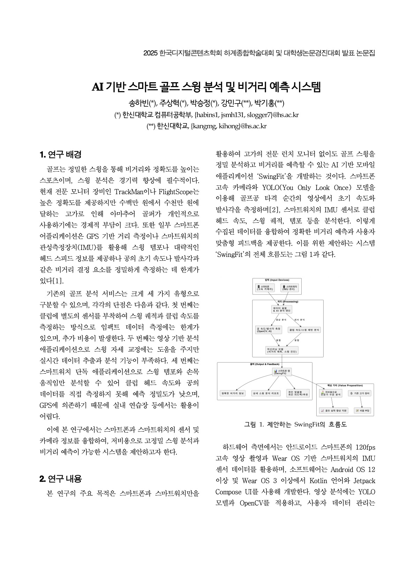
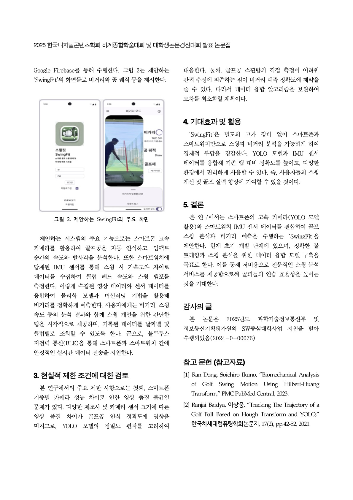
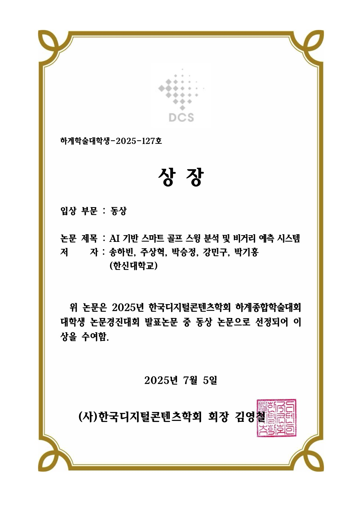
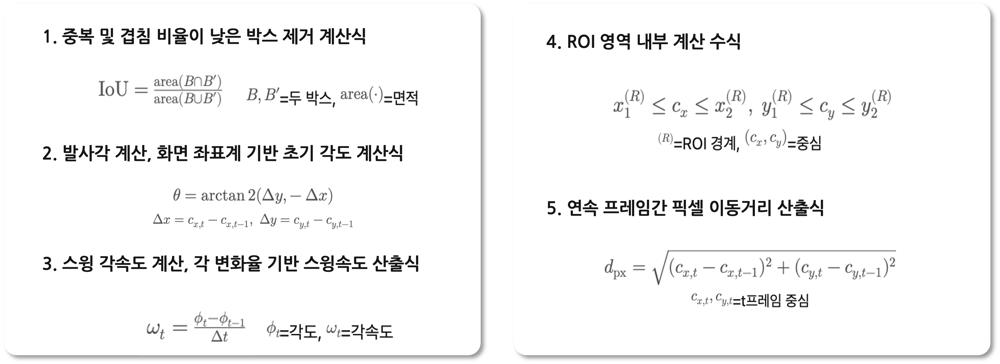
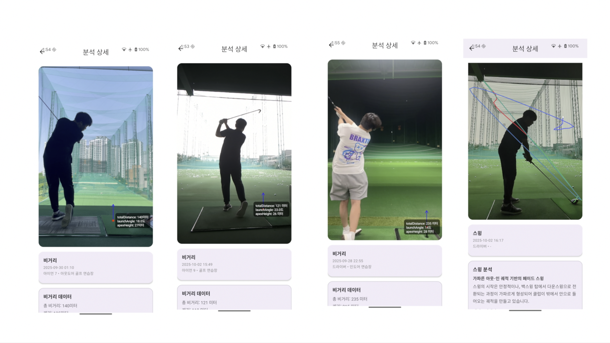
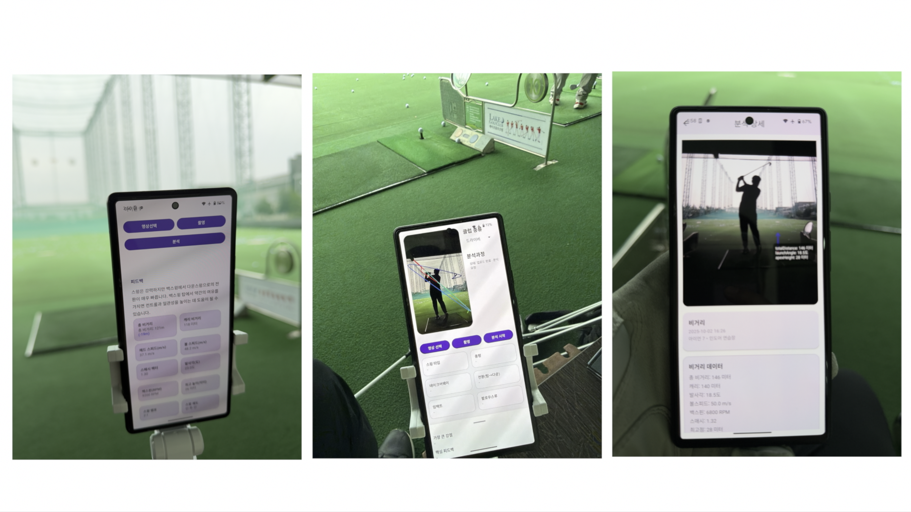
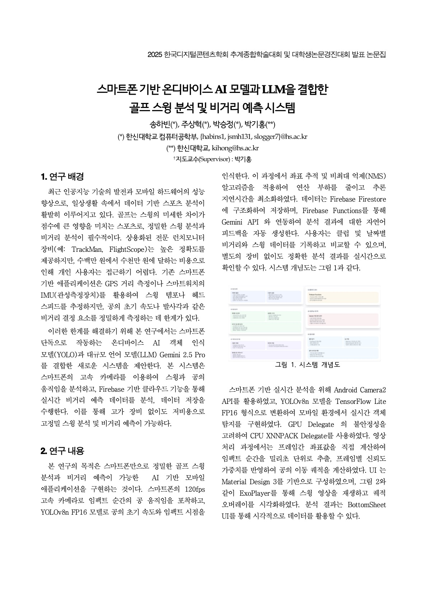
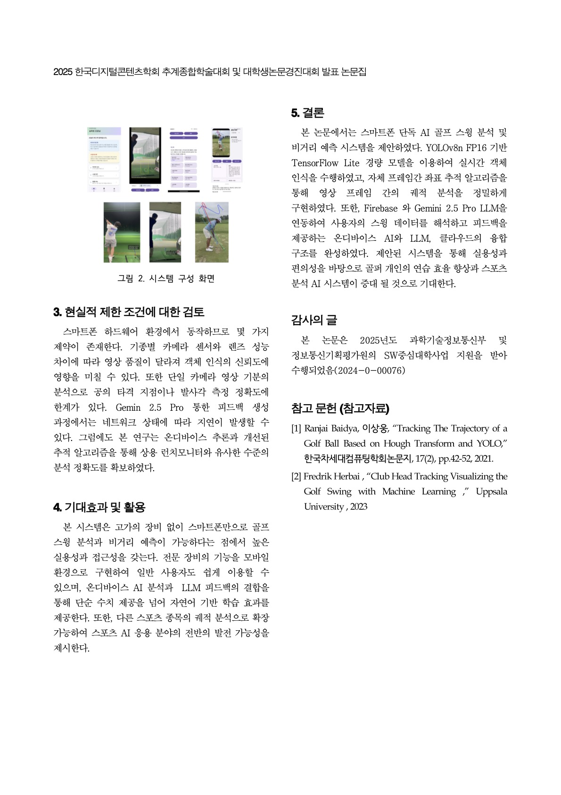
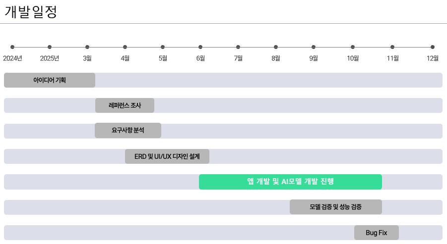

2025 하계 종합학술대회
한국디지털콘텐츠학회 대학생 논문 경진대회 · 동상
AI 기반 스마트 골프 스윙 분석 및 비거리 예측 시스템으로 실제 골프 스윙·비거리 데이터를 기반으로 한 분석 결과와 프로토타입 앱 구현 내용을 발표했습니다.



SwingFit은 스마트폰으로 촬영한 영상을 분석하여 결과를 보여주는 골프 코칭 서비스입니다. 온디바이스 AI 모델을 통해 공의 임팩트 시점을 기준으로 방향과 탄도를 바탕으로 비거리를 예측하고, 스윙 궤적을 분석합니다. AI가 자세·템포·임팩트 등 개선 포인트를 이해하기 쉬운 문장으로 안내하며, 피드백을 제공합니다. 기록은 세션별로 정리되어 날짜·클럽별 비교가 가능하고, 클라우드에 동기화되어 어디서든 이어서 확인할 수 있습니다.

골프공/스윙 객체 검출 성능을 mAP@0.5와 mAP@0.5–0.95로 비교했습니다. 모델은 FP16 TFLite 기준으로 수집 데이터셋에서 일관된 정확도를 보였습니다.
온디바이스 추론 환경에서 프레임률(FPS)과 단일 프레임 추론 지연시간(ms)을 측정했습니다. CPU XNNPACK 최적화 기준의 대표 수치를 제시합니다.
실측 표본 거리(m)는 90, 100, 130, 145, 150, 160, 210, 245m. 구간별 특성을 반영해 비선형 오차율을 적용했습니다(150–160m는 ±8.7%, 그 외 구간은 4.5–5.5% 범위). 예측값은 오차구간을 포함한 하나의 범위 막대(보라)로 표기하고, 중앙 점으로 예측 m를 표시합니다.
실제 골프 연습장 환경에서 태블릿·스마트폰으로 SwingFit을 사용해 스윙을 촬영·분석한 장면입니다. 앱이 실제 어떻게 쓰이는지 한눈에 보여줍니다.


2025년 한국디지털콘텐츠학회 하계·추계 종합학술대회 대학생 논문 경진대회에 “SwingFit: 스마트폰 기반 온디바이스 AI 모델과 LLM을 결합한 골프 스윙 분석 및 비거리 예측 시스템”으로 참가했습니다. 하계 학술대회에서는 동상을 수상하였고, 추계 학술대회는 발표를 완료하고 현재 심사 결과를 기다리고 있습니다.
AI 기반 스마트 골프 스윙 분석 및 비거리 예측 시스템으로 실제 골프 스윙·비거리 데이터를 기반으로 한 분석 결과와 프로토타입 앱 구현 내용을 발표했습니다.



하계 발표 이후, 모델·UI/UX·실측 비거리 검증을 고도화한 내용을 중심으로 추계 학술대회에서 연구 결과를 발표했습니다. 현재 대학생 논문 경진대회 심사 결과를 기다리고 있습니다.


